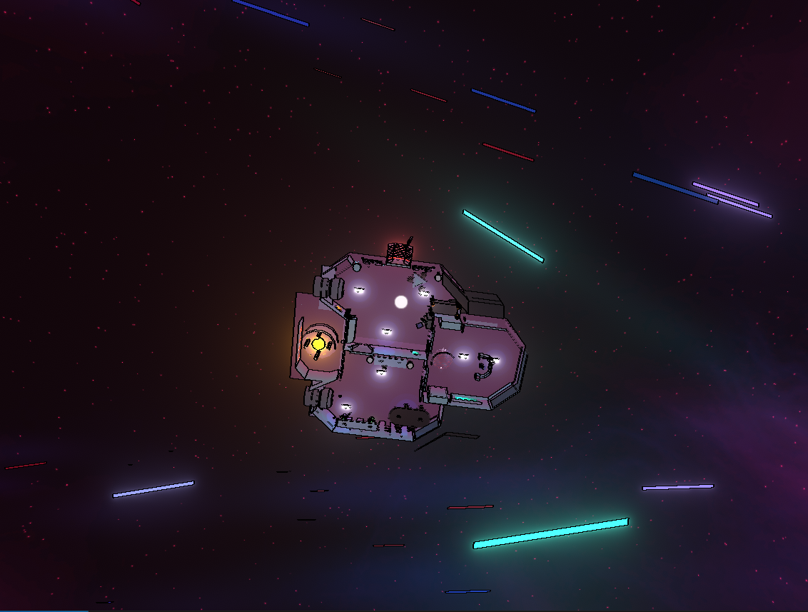
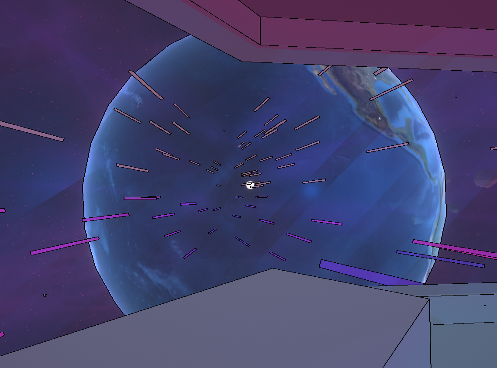

Sol Traveler is a short space themed indie video game. You find yourself stranded on a ship in deep space. Your one goal is to pilot the ship back to Earth. The ship itself is not very large, it has a total of three rooms that you can access. Despite that small number of rooms there are a lot of things you can interact with.
You can interact with books, alien food, and various buttons on the ship. You do not need to eat the food but you can. There are two buttons that dispense food when pressed. One button dispenses a drink container and the other dispenses an alien mushroom and an alien orb. To control the ship there are 6 total levers. In the main control room there are 4 of these levers. There are two levers to rotate the ship left or right. The other two levers turn the ship left or right. In the back of the ship there are two more levers. These control the thrusters.
This network graph displays what you can interact with in Sol Traveler and what is needed to clear the game. There are a lot of things you grab and throw, but they are not needed. If you figure out the ship‘s controls then you are set.
The game has simple controls that are easy to remember. You use the W, A, S, D controls to move in 4 directions. Your mouse is used to aim and look around. The left mouse button is used to interact and pick up items. There is one more control and it is only to eat the food, this is the E button.
Sol Traveler has a simple but effective artstyle. It consists of one tone colors black outlines and then glowing colors. Glowing colors often are used to put emphasis on interactables. For example each door button glows a sky blue. One issue I have with this however is some objects glow but you cannot interact with it. For example in the control room, there are two glowing purple panels. These appear to be buttons but you cannot touch them. The game also has background noise. It adds a nice ambience to the spaceship. Each lever has a noise as well.
This game originally peaked my interest because it is space themed. I am very into sci-fi and as a sci-fi game, I had to check it out. The game does a good job at building a small believable world. The ship provides the basics to survival, food, drinks, and a place to sleep. While you don’t need these things to clear the game, they are present. This immediately adds realism when I explore a world. Another thing that I find to add realism is the airlock. When you open one door the other will close, just as a real airlock would. I think this is a fantastic little detail, even if going out into space doesn’t kill or harm you in any way.
Despite the game taking place in deep space, you can imagine what that could mean for humans. Your one goal is to make it back to Earth. We can artificially create life to sustain us but ultimately we need Earth. We will need to return to Earth eventually because that is where we come from. That is where everything we know comes from. We should take care of Earth because one day, when we need to come back, it’ll still be able to support us.
